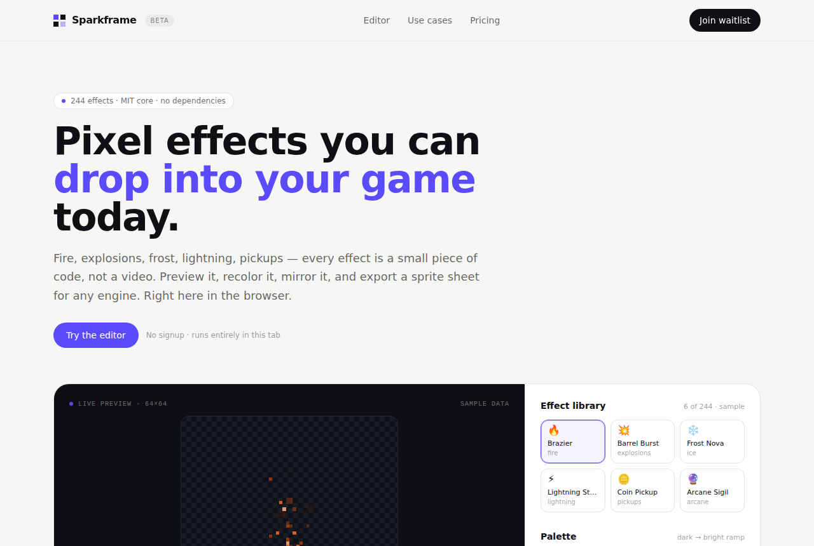

像素特效代码库，拖进游戏就能用
patch-gg/pixelfx · Media & creativeMIT⭐ 1,328

patch-gg/pixelfx 是一个像素风特效代码库，里面有 244 个特效，每个都是一个独立的 JS 文件，包含火焰、爆炸、魔法、天气、UI、拾取物等类别。每个特效都可以在浏览器里实时预览、改色、镜像，也可以导出成 sprite sheet 给 Godot、Unity、GameMaker 等引擎用。它最近在 X 和 Reddit 上传播得挺快，从 README 看，作者借鉴了 Hugo Duprez 在 Sprite Fusion 上的开放特效，并把它扩展到了库的规模。它还附带一个 Claude Code skill，能按像素美术师的工作流生成新特效：先画草稿，再渲染，然后检查，最后修改。
如果做成产品，机会在于把“代码库”变成“可视化编辑器 + 订阅生成”。普通用户不想碰 npm 和命令行，他们想要的是在浏览器里拖拖拽拽，调色、改参数、实时预览，然后一键导出引擎文件。订阅可以解锁 AI 生成新特效，或者导出高分辨率 sprite sheet。由于 MIT 许可，代码本身可以被复制，所以付费点应该放在编辑体验和持续生成上，而不是卖素材包。
Today's top 5
| # | Repo | Buzz | Startup | Overall |
|---|---|---|---|---|
| 1 | patch-gg/pixelfx | 7.67 | 7.35 | 7.93 |
| 2 | elvarofficial/teardown | 8.0 | 6.8 | 7.42 |
| 3 | wangzan101/Mika | 8.67 | 6.9 | 6.97 |
| 4 | LNPANDY/NX2Apple | 7.67 | 6.35 | 6.81 |
| 5 | pingdotgg/t3code | 7.33 | 5.6 | 6.8 |